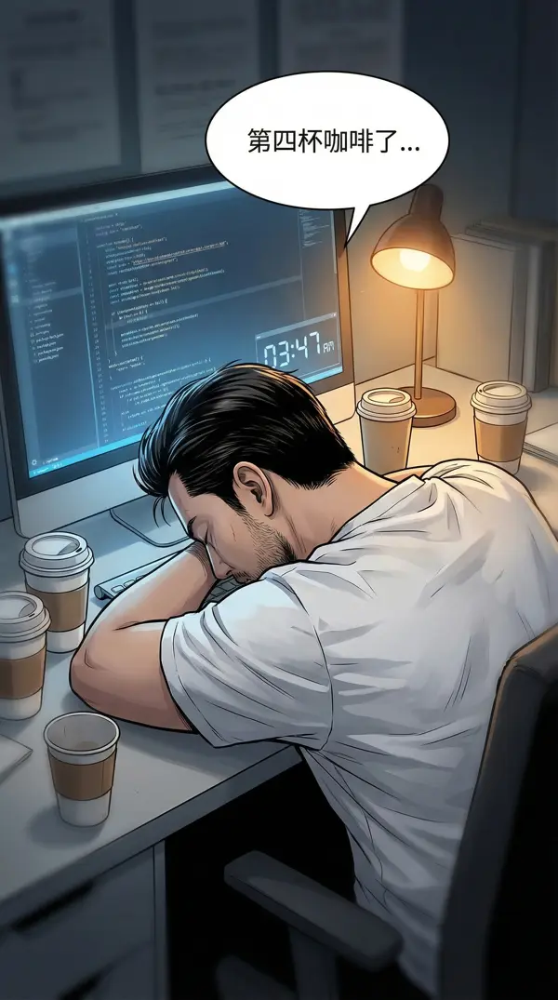
2026年，某互联网公司。凌晨三点四十七分。
第四杯咖啡了...这段代码怎么也跑不通......
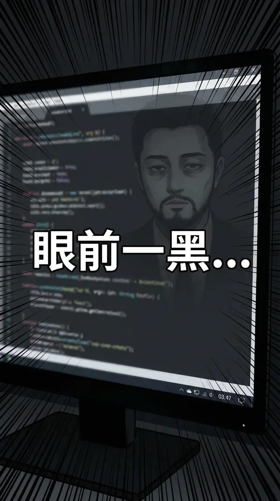
屏幕上的代码开始模糊。系统时钟冷冰冰地显示着 03:47。
眼前一黑...不对...心脏...
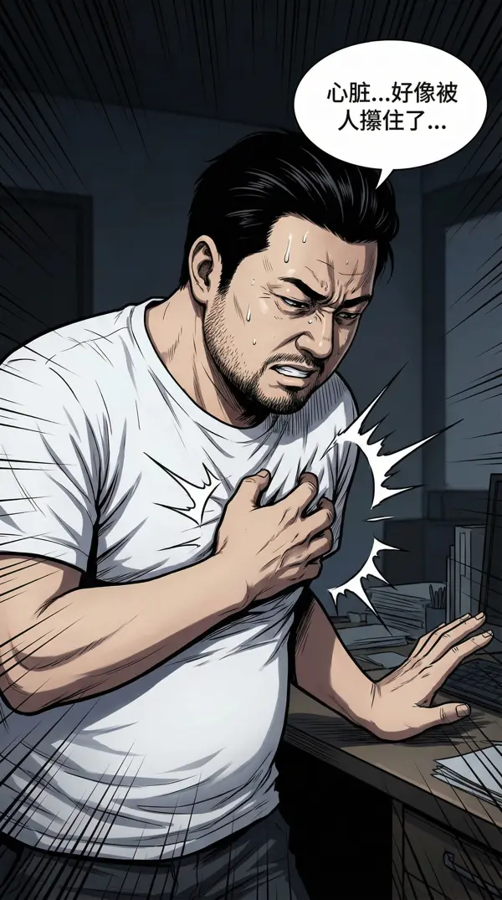
心脏好像被人攥住了......不是吧，我才三十出头......
胸口剧痛，冷汗瞬间浸透了后背。手指已经无法控制。
意识像潮水一样退去。最后看到的，是屏幕上跳动的光标。
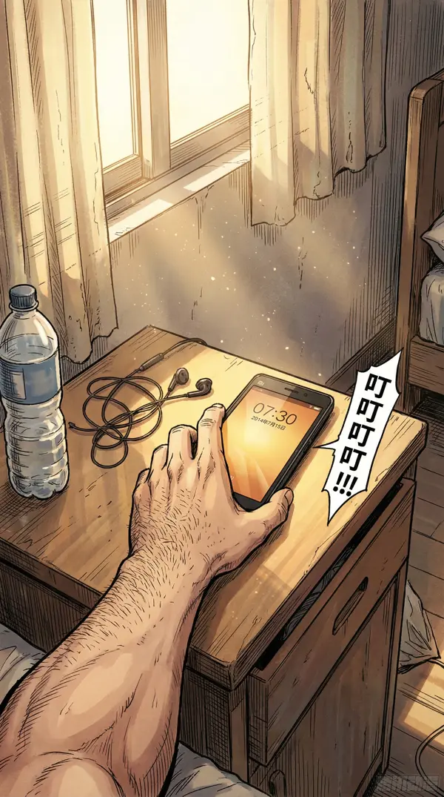
叮叮叮叮——
......什么声音？闹钟？
一个廉价的手机铃声把我从黑暗中拽了出来。屏幕上赫然写着：2014年7月15日。
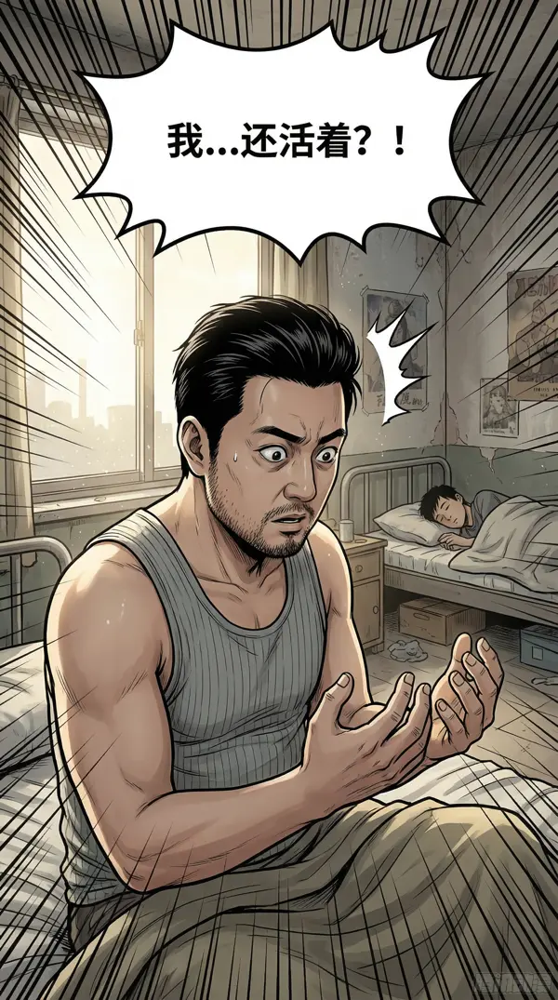
我...还活着？！
猛地坐起来。窄小的单人床，廉价的木质家具，对面床上还有人在呼呼大睡——
等等...这不是我2014年住的合租屋吗？？
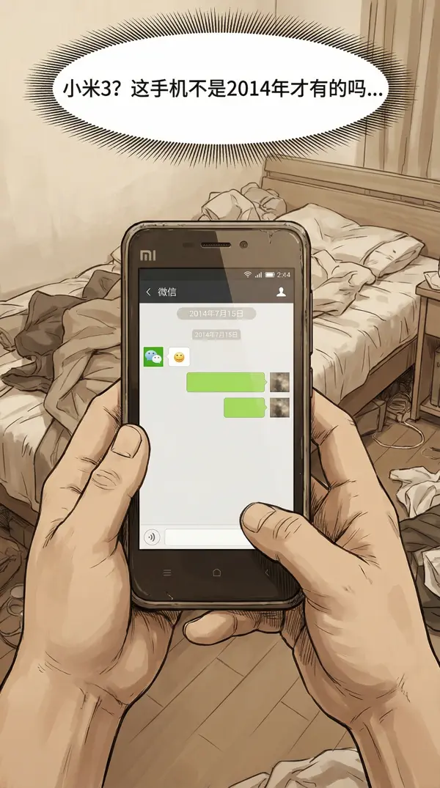
小米3？？这手机是...2014年的旗舰机？
1GB内存就敢叫旗舰......我真的回来了。
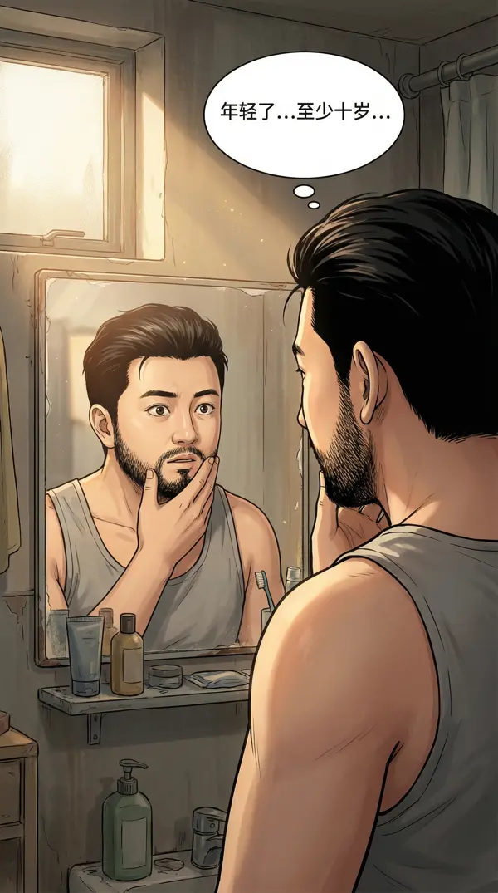
我跌跌撞撞走进洗手间，看着镜子里的自己——
年轻了...至少十岁。但这络腮胡还是一样浓密。
镜中的脸，确实是年轻时的自己。皮肤更紧致，眼神更清亮。
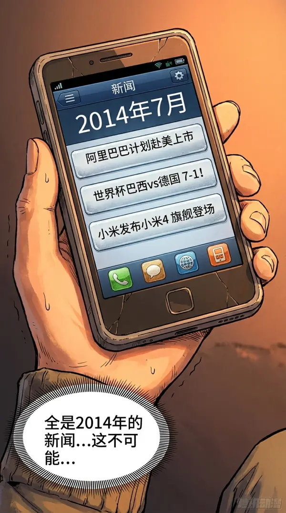
颤抖着打开新闻。每一条都在确认一个疯狂的事实——
阿里巴巴计划赴美上市...世界杯巴西vs德国...小米发布小米4...
全是2014年的新闻...这不可能......这不可能。
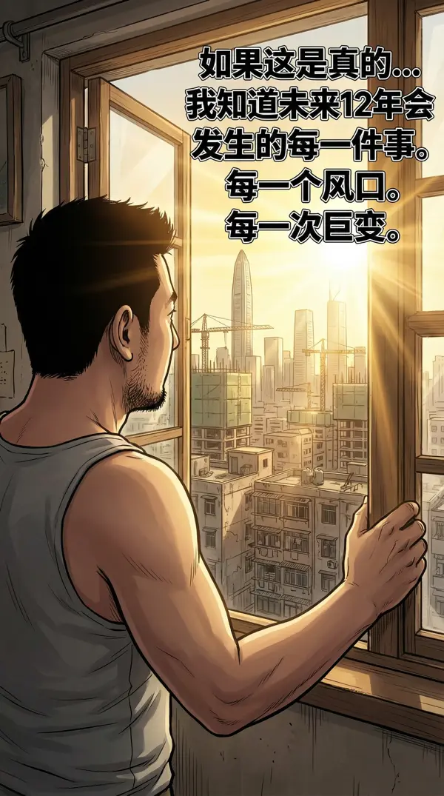
站在合租屋的窗前，望着2014年的深圳南山区——楼还没那么多，到处都是工地和塔吊。
如果这是真的...我知道未来12年会发生的每一件事。每一个风口。每一次巨变。AI、短视频、直播、新能源、大模型......全在我脑子里。
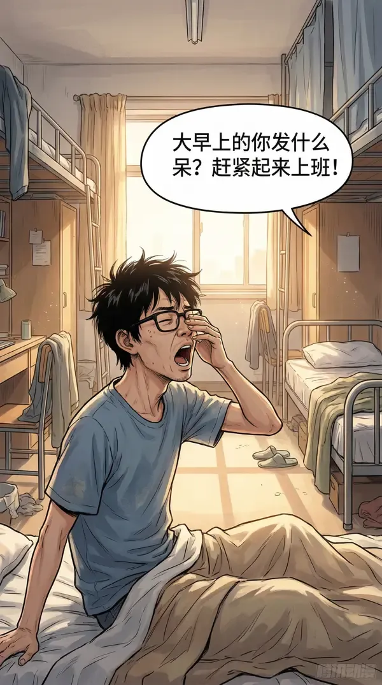
"大早上的你发什么呆？赶紧起来上班！"
对面床上的老赵打着哈欠坐了起来。瘦高个，黑框眼镜，头发乱成鸡窝。
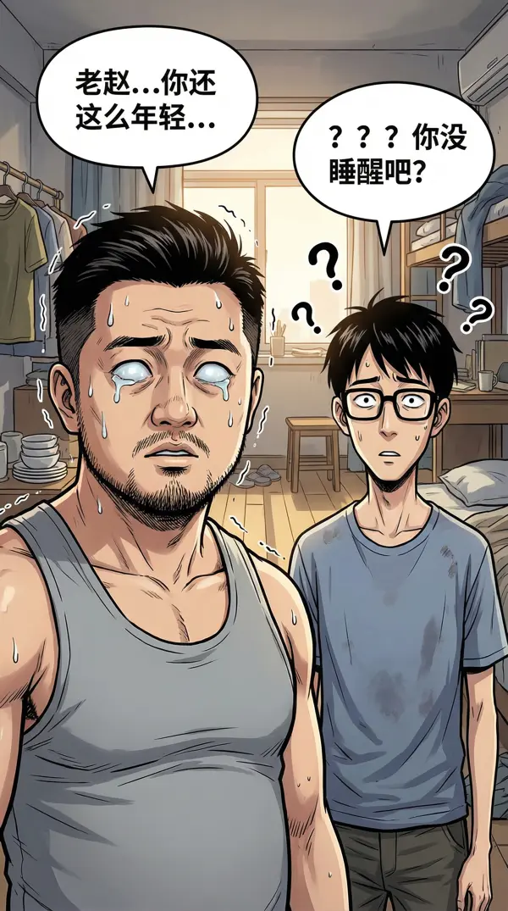
老赵...他还这么年轻...2026年他都秃了一半了......
"老赵...你还这么年轻......"
"？？？你没睡醒吧？走了走了，迟到扣钱的。"
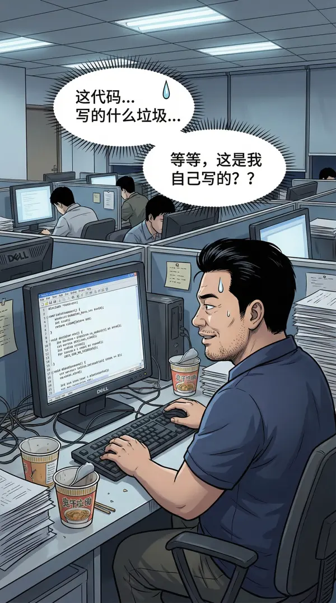
坐在公司工位上，打开我2014年写的项目代码——
这写的什么垃圾......等等，这是我自己写的？？前世的我这代码水平也太拉了......
◆ 决策点 1
继续按部就班上班？还是立刻辞职去做自己的项目？
不急。先用两周确认"重生"是真实的，同时暗中准备。冲动是小孩才干的事。菩萨心肠，霹雳手段——先看清局面，再一击必杀。
表面上，我还是那个普通的后端程序员。但从这一刻起，每一行代码、每一个决定，都将完全不同。
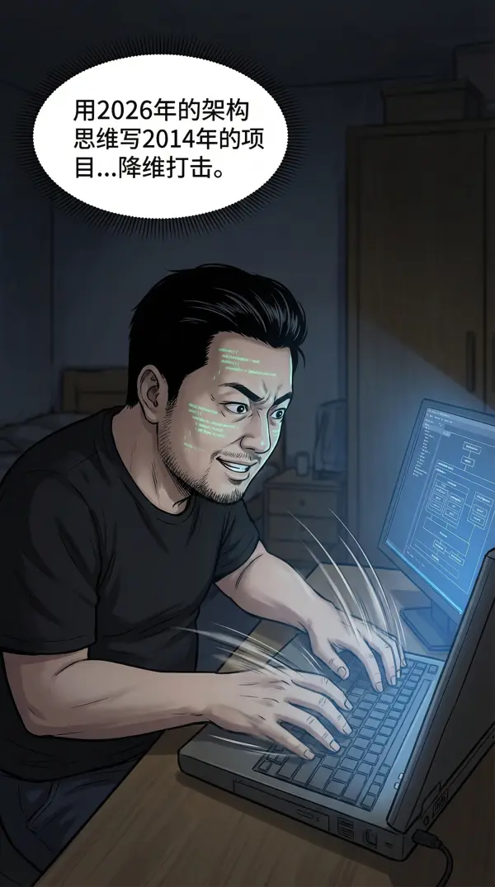
白天正常上班，晚上回到合租屋就变了一个人。
用2026年的架构思维写2014年的项目...这叫什么？降维打击。
手指在键盘上飞舞。微服务、容器化、事件驱动......这些2014年还没流行的概念，被我一行行刻进代码里。
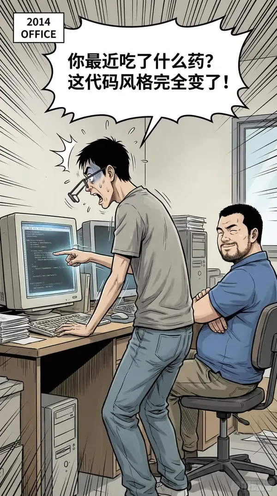
"你最近吃了什么药？这代码风格完全变了！"
老赵看着我提交的代码，眼镜差点掉下来。
"可能...最近看了几本好书吧。"
（好书？是未来12年的行业经验谢谢。）
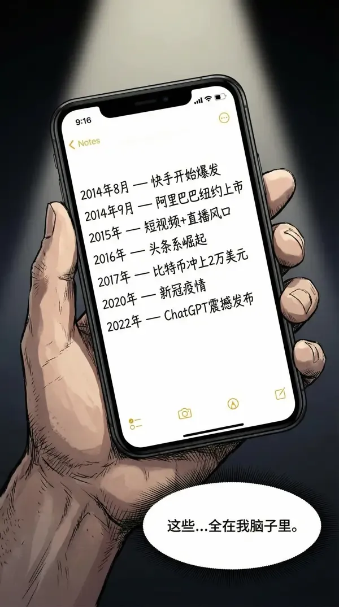
每天深夜，在备忘录里默默记录未来12年的关键节点——
快手爆发、阿里上市、短视频风口、头条崛起、比特币暴涨、新冠疫情、ChatGPT横空出世......这些，全在我脑子里。
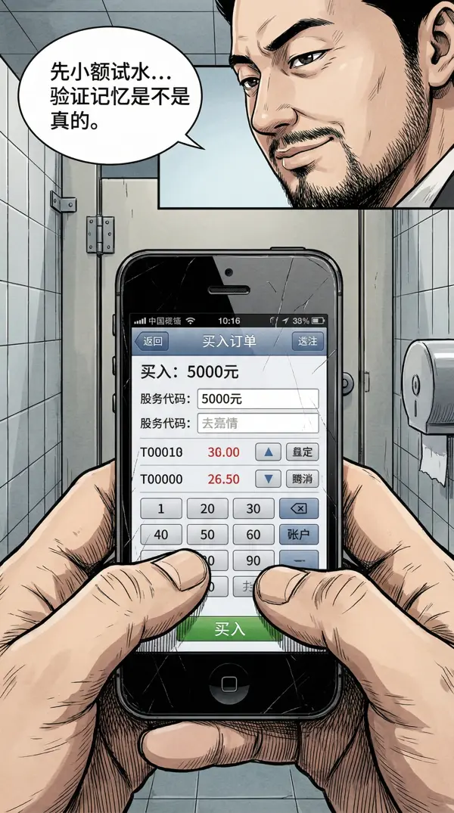
躲在厕所隔间里，用5000块积蓄买入了一只我知道即将暴涨的股票。
先小额试水...验证记忆是不是真的。如果这只股票涨了，一切就确认了。
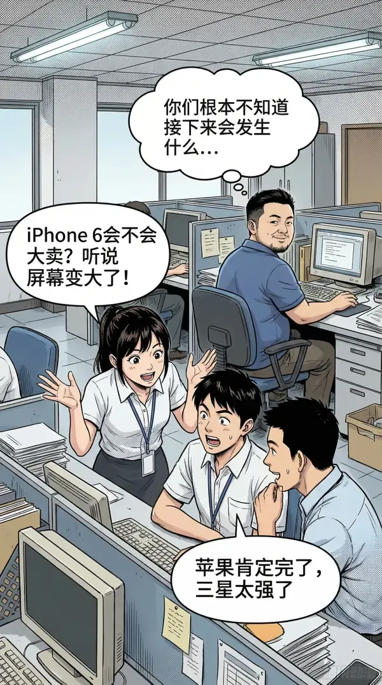
"iPhone 6会不会大卖？听说屏幕变大了！"
"苹果肯定完了，三星太强了！"
我嘴角微微上扬，差点没绷住。你们根本不知道接下来会发生什么...
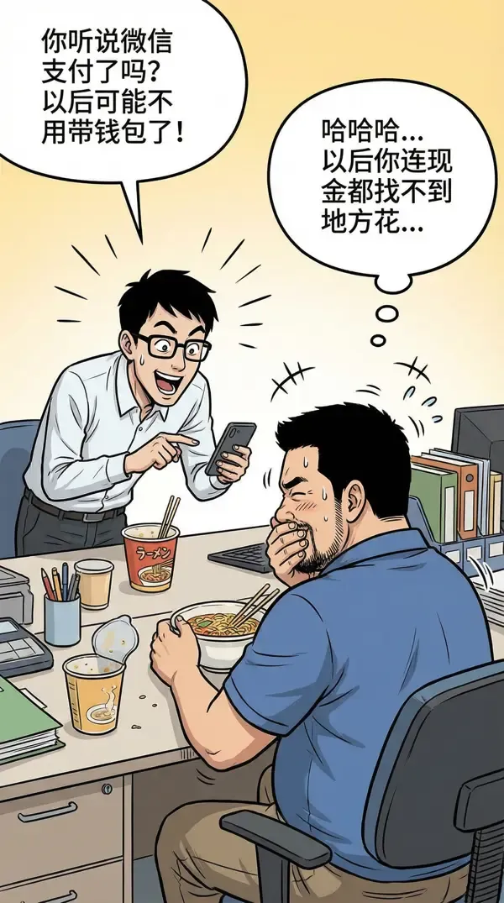
"你听说微信支付了吗？以后可能不用带钱包了！"
老赵午饭时兴奋地给我安利。我差点把面条喷出来。
哈哈哈哈...兄弟你不知道，以后你连现金都找不到地方花。连路边烤红薯的大妈都用二维码收款......
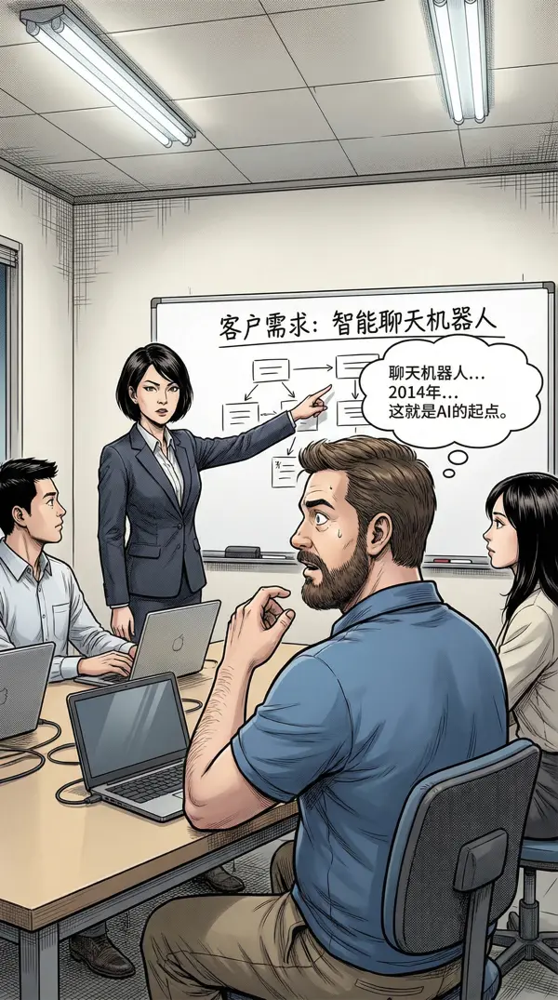
林姐把我们叫进会议室。白板上写着：「客户需求：智能聊天机器人」。
2014年，这只是一个不起眼的小需求。但我的心跳突然加速——
聊天机器人...2014年...这就是AI的起点。
◆ 决策点 2
按客户要求做个简单chatbot交差？还是偷偷在底层架构中埋下深度学习的种子？
埋种子。天然好奇系统怎么运作——这是骨子里的黑客基因。在不影响交付的前提下，底层用上未来的架构设计。
表面波澜不惊，底下暗流涌动。
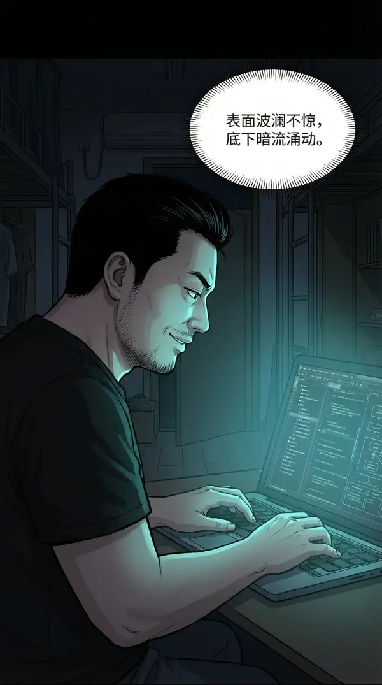
深夜。所有人都睡了。我一个人对着笔记本电脑，把2026年的AI架构思想，一点一点揉进2014年的chatbot项目里。
林姐看到的是一个普通的聊天机器人。但底层的数据管道、模型接口、特征工程框架......这些种子，会在未来长成参天大树。
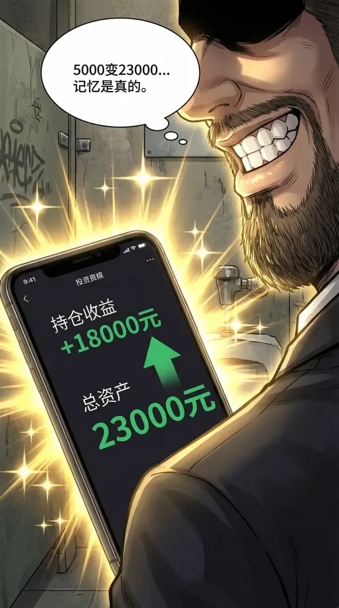
一周后。厕所隔间。颤抖着打开股票App——
5000变23000......记忆是真的。一切都是真的。
手机差点掉进马桶里。
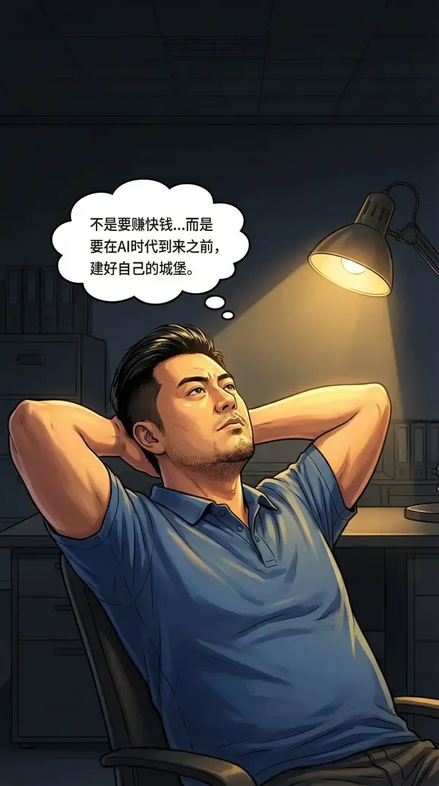
下班后，我一个人坐在空旷的办公室里，仰头望着天花板。
不是要赚快钱。区区两万三算什么？我要的，是在AI时代到来之前，建好自己的城堡。一个别人连想象都想象不到的城堡。
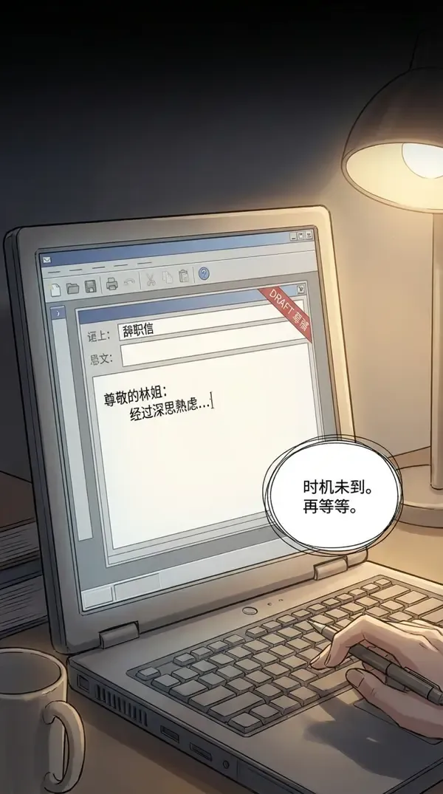
辞职信写好了，存在邮箱草稿里。
时机未到。再等等。但这封信——一定会发出去的。
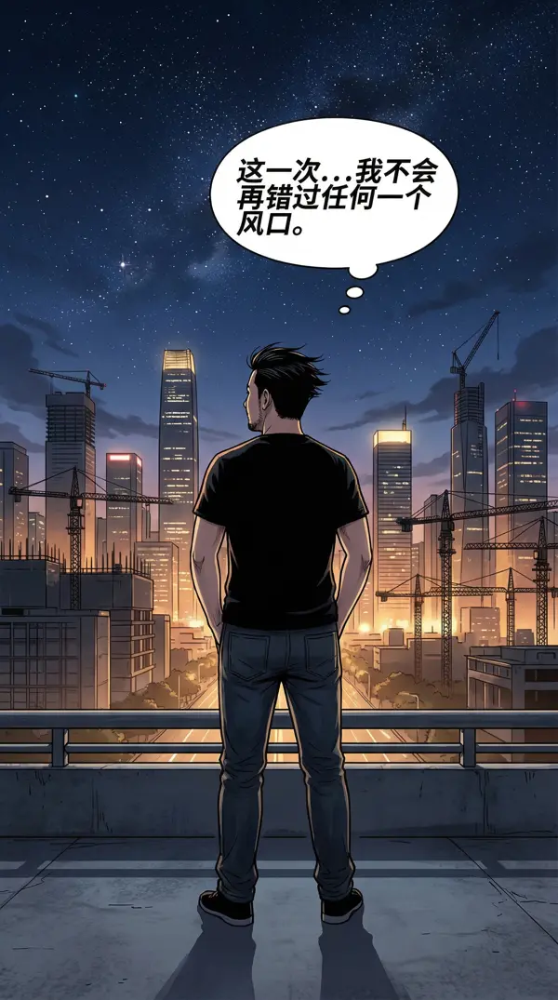
站在深圳的夜色里，望着南山区还没那么多高楼的天际线。2014年的风，吹过还没被玻璃幕墙挡住的脸。
这一次，我不会再错过任何一个风口。
"周末去网吧开黑！CF还是LOL？"
老赵兴冲冲地拽住我的胳膊。而我的手机里，刚收到一个行业聚会的邀请——
那个聚会上，有几个我知道未来会成为独角兽创始人的人......
◆ 决策点 3
陪兄弟去网吧？还是去行业聚会提前结识未来大佬？
两全其美。先请老赵吃顿好的——菩萨心肠，不能为了利益冷落兄弟。但聚会也绝不能错过——霹雳手段，关键机会一个都不放过。
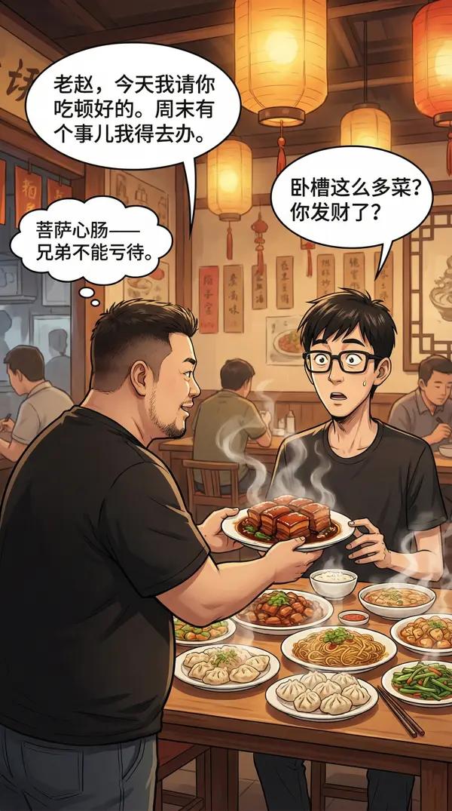
"老赵，今天我请你吃顿好的。周末有个事儿我得去办。"
"卧槽这么多菜？你发财了？"
（23000块的底气。谢谢未来记忆。）
兄弟，以后我飞黄腾达了，绝不会忘了你。
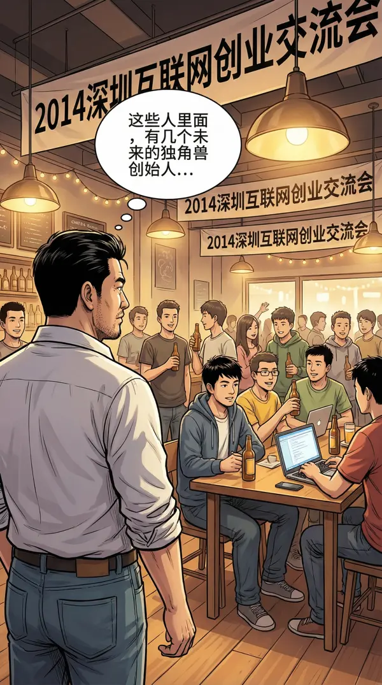
2014年7月，深圳某创业咖啡馆。「互联网创业交流会」的横幅挂在门口。
这些人里面，有几个未来的独角兽创始人...此刻他们都还是nobody。
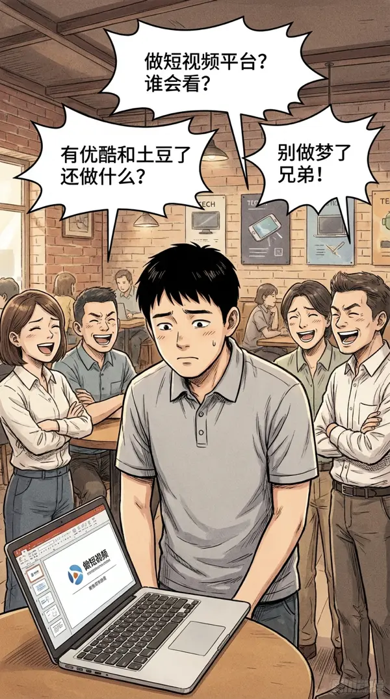
我看到了一个人——
他正在被一群人嘲笑。说他"做短视频平台"的想法是异想天开。
"做短视频平台？谁会看？"
"有优酷和土豆了还做什么？"
"别做梦了兄弟！"
他看起来很沮丧，但眼神里有一种执拗。
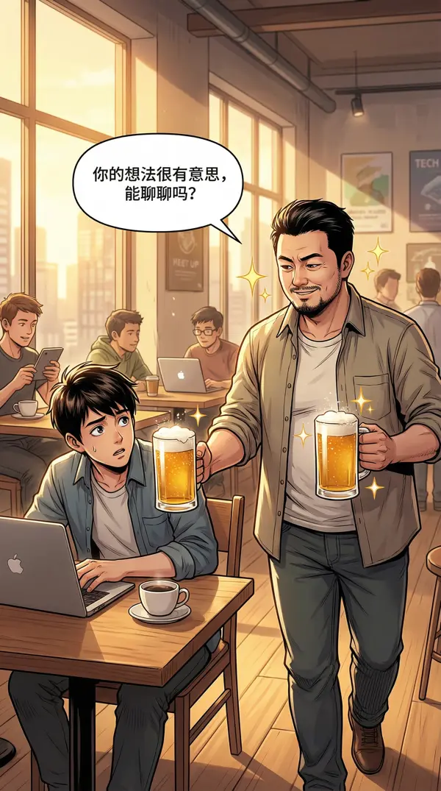
但我认出了他。
我认出了他。在2026年，他是某个估值千亿的短视频帝国的联合创始人。此刻，他还只是一个被所有人嘲笑的普通产品经理。
我拿起两瓶啤酒，走了过去。
"你的想法很有意思，能聊聊吗？"
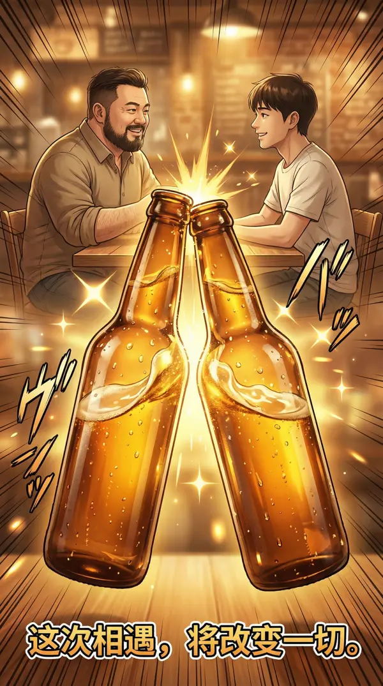
两瓶啤酒碰在一起，清脆的声响像是命运齿轮转动的声音。
这次相遇，将改变一切。
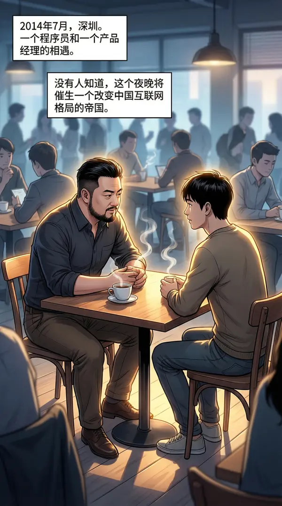
2014年7月，深圳。一个重生的程序员和一个被嘲笑的产品经理坐在咖啡馆角落，聊了整整一夜。
没有人知道，这个夜晚将催生一个改变中国互联网格局的帝国。